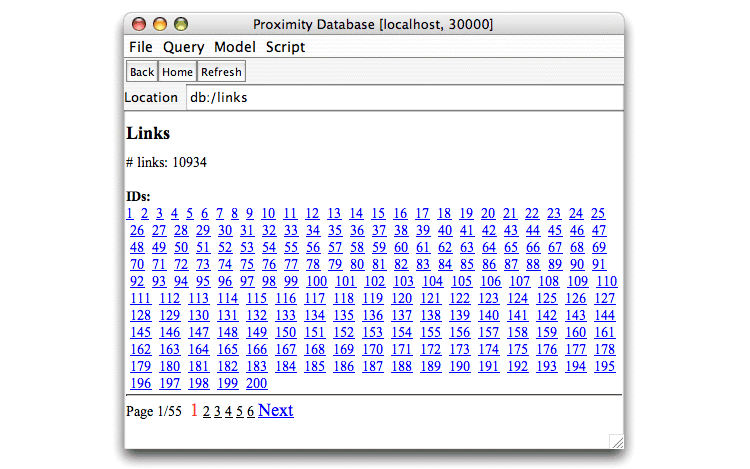

This exercise describes how to start the Proximity Database Browser and walks through an exploration of several objects and links in the ProxWebKB database.
Exercise 4.1. Exploring objects and links:
-
If it is not already running, start the MonetDB server on the ProxWebKB database.
>
Mserver --dbname ProxWebKB $PROX_HOME/resources/init-mserver.milThe
init-mserver.milscript sets the port for the server to 30000. To use a different port, add--set port=(wherennnnnnnnnnis the new port number) to the command line, e.g.,>
Mserver --dbname ProxWebKB $PROX_HOME/resources/init-mserver.mil \ --set port=45678Remember to use a port number > 40000 if you are using MonetDB 4.6.2.
-
Start the Proximity Database Browser. Substitute the appropriate host and port information if you are running the MonetDB server on a different machine or are using a different port.
>
cd $PROX_HOME>bin/gui.sh localhost:30000Proximity starts the Proximity Database Browser. The Proximity interactive Python interpreter opens in a separate window. See “Using the Proximity Python Interpreter” for information on using the interpreter to interactively work with the data. You can close the interpreter window when you are not using it.
-
In the Proximity Database Browser home page, click Objects. Proximity displays the total number of objects in the database and lists the IDs for the first 200 objects. The ProxWebKB database includes 4135 objects.

Displaying long lists can take a considerable amount of time; therefore, Proximity displays 200 items at a time. To display more objects, click Next to see the next 200 objects, or click the corresponding page number to go to that portion of the object list. For example, clicking 4 displays objects 601 through 800.
-
Click 1 to see the details for object 1. Proximity displays information about object 1.

Because MonetDB optimizes column-centric operations at the expense of row-centric operations, it can be slow to collect the attributes and values for a specific object or link in databases containing a large number of attributes. Proximity therefore separates the display of attribute information from other information about objects and links.
-
Click attrs. Proximity displays a list of the attributes and their values for object 1. (The order in which attributes are listed may differ from that shown below.)

Proximity supports set-based attribute values allowing objects and links to have multiple values, including duplicated values, for an attribute. Object 1 has multiple values for the page_words_top100 attribute. This attribute represents occurrences of the top 100 words found in the web pages used to create the ProxWebKB database. Individual words can occur more than once in this list if they occur more than once in the source web page.
-
Click Home to return to the Proximity Database Browser start page.
-
Click Links. Proximity displays the total number of links in the database and lists the IDs of the first 200 links. The ProxWebKB database contains 10,934 links.
 -
Click 1 to see the details for link 1. Proximity displays summary information about link 1 including the IDs of the objects it connects.

-
Click attrs. Proximity displays a list of attributes and their values for link 1.

In Proximity, links are database entities on a par with objects. Like objects, links have IDs and set-based attribute values. Because we imported additional values for the link_tag attribute in Exercise 3.3, some links, including link 1, have more than one value for this attribute.
-
Continue exploring the ProxWebKB database. The remaining exercises in this tutorial use the ProxWebKB database, so understanding the data it represents can be helpful as you work through the remaining exercises. When you are finished, continue to the next section.